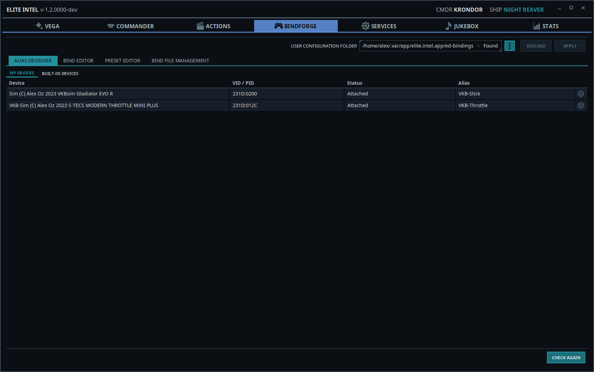

Installation
Elite Intel V1.2 is the current release.
 Linux
Linux  Windows
Windows
- Download the 👉installer👈.
- Run the installer and follow the on-screen prompts.
- Set up a language model. Elite Intel cannot run without one. Two options:
- Local LLM (free, offline): see the Local LLM guide. Requires capable GPU hardware.
- Cloud LLM (paid, and easier to set up): see Cloud LLM options for how to get an API key, then enter it in Services → AI Services.
Setup complete. Next: the user interface, tab by tab.
First-run checklist
Elite Intel speaks these warnings out loud when services start, so you will hear about anything missing — but they are worth doing up front:
| Step | Where |
|---|---|
| Point it at a language model | Services → AI Services |
| Check the journal folder | Commander tab |
| Let BindForge set up, then give Vega the keys she needs | BindForge tab |
| Calibrate audio | Vega tab → CALIBRATE AUDIO |
What Elite Intel sets up for you
Three things on a fresh install are worth knowing about before you start.
LM Studio, installed for you
If LM Studio is only for Elite Intel and nothing else, let Elite Intel install it. This is the preferred way. Press Install LM Studio under Services → AI Services → LMStudio Setup. Elite Intel installs LM Studio, downloads and loads the model, tests it, and fills in Address and Model for you. From then on it starts LM Studio with its services and stops it when you stop them or close the app, so the model uses your graphics card's memory only while Elite Intel runs. Uninstall LM Studio removes it again.
The button appears only when your graphics cards can hold the game and the model together: an NVIDIA RTX 3090 with 24 GB or better, two newer NVIDIA cards with about 20 GB between them, or AMD cards with the same memory, as a beta. The Local LLM guide has the details. If you use LM Studio for other things as well, install it yourself; Elite Intel then only adds the model and fills in the fields, and never starts, stops or removes your LM Studio.
Your HOTAS, joysticks and pedals
The first time you open the BindForge tab, it backs up your control files, finds every copy of the game on this PC, and looks at what is plugged in. Out of the box, the game knows many controllers only by a hardware ID. BindForge offers each controller without a name a real one, such as Throttle or Pedals, and you can Skip it. Your named controllers are listed in the Alias Designer:

Press a controller's gear to label its buttons, axes and hats: Fire Primary instead of
JOY_1, Pinky Button instead of JOY_5. Press a button and its box lights up, so you can tell
which one is which.

The labels show in the game's Controls screen and in the Bind Editor, so a binding reads VKB-Stick · 1st Hat Up rather than a hardware ID and a button number.
The game from more than one store
Own Elite Dangerous on both Steam and Epic? All copies share one set of controls, but each keeps its own list of your controllers and button names. When the lists disagree, your controls can work in one copy and fall back to keyboard and mouse in another. BindForge spots this the first time you open it and offers Make your game copies match:

- Plug in — plug in the controllers you fly with. Press a button and its row lights up.
- Choose — answer a few short questions, such as which name to keep for a controller each copy calls something different. Your controls follow whichever name you pick. Too many questions? Make everything like one of my copies... sets everything up the way the copy you play most has it.
- Check — see exactly what every copy will have, and why, before anything changes.

Nothing changes until the last step, and everything is backed up first. Not now leaves your files alone. If one copy's control files change later, for example after a game update, BindForge asks only Which setup is current? and makes the others match.
New to Elite Dangerous?
The game creates its control files only after you have changed something, and Elite Intel cannot operate your ship without them. Complete your commander training, then in the game's Options → Controls, set the galaxy map UI movement to the arrow keys and apply.
Moving to another computer
Backup Settings & Data on the Services tab puts your settings, your data and your custom commands in one file you can restore on the new machine.
Uninstall (Linux)
~/.var/app/elite.intel.app/uninstall
For issues, use Report a bug on the Vega tab: it sends your description straight to the team, no account needed. To chat with us, join the community on Matrix with a free account. The Element app is best, but any modern browser works for a quick chat. Bug reports and pull requests are welcome.
Community 👉Matrix👈 (new to Matrix? read the Matrix How To)